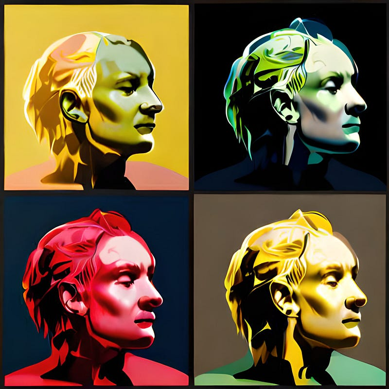

The Art of Organization: Facets and Themes in ggplot2

In the world of data visualization, ggplot2 offers a versatile palette of tools to create stunning and insightful plots. However, the true power of ggplot2 lies not only in its geometries but also in its ability to organize and present data in an elegant and efficient manner. This is where facets and themes come into play, acting as the invisible threads that weave together a compelling tapestry of visual stories.
Facets enable you to partition complex, multivariate data into a series of smaller, more manageable plots, akin to peering through different lenses to uncover hidden patterns and relationships. Themes, on the other hand, serve as the aesthetic backbone of your visualizations, providing consistency and polish that bring your data to life.
In this post, we will embark on a journey to master the art of organization in ggplot2 by exploring the intricacies of facets and themes, unlocking the full potential of your data visualizations.
Faceting: A Lens for Multivariate Data Exploration
Faceting in ggplot2 acts as a powerful magnifying glass, revealing the subtle nuances and intricate relationships within multivariate data. By breaking down complex datasets into smaller, coordinated plots, facets allow you to examine and compare various aspects of your data simultaneously, like pieces of a puzzle coming together to form a comprehensive picture.
In ggplot2, there are two primary types of facets: facet_wrap() and facet_grid(). While facet_wrap() is ideal for creating a series of plots based on a single categorical variable, facet_grid() lets you visualize relationships across two categorical variables in a grid layout. Both facet types provide flexibility and control, enabling you to customize and refine your data exploration.
To make the most of faceting, it’s essential to follow best practices, such as selecting the appropriate facet type for your data, ensuring readability, and maintaining a consistent visual style. By adhering to these principles, you can transform your visualizations into coherent, insightful narratives that captivate your audience.
Facet Examples: Unlocking Insights in Your Data
To truly appreciate the power of faceting in ggplot2, let’s delve into some practical examples and explore how they can enhance our visualizations:
facet_wrap(): Displaying data with multiple categories
Suppose you have a dataset containing information about car models, their fuel efficiency, and the number of cylinders they possess. You can create a scatter plot using geom_point() to visualize the relationship between fuel efficiency and the number of cylinders, but with facet_wrap(), you can take it a step further. By faceting the data based on the number of cylinders, you can compare the fuel efficiency trends across different car models:
library(ggplot2)
ggplot(mtcars, aes(x = wt, y = mpg)) +
geom_point() +
facet_wrap(~cyl)
facet_grid(): Visualizing relationships across two categorical variables
To demonstrate facet_grid(), let’s use the mtcars dataset available in base R. We can explore the relationship between car weight, miles per gallon, and the number of cylinders across different gear types. This will create a grid of plots, each showcasing the relationship between weight and miles per gallon for a specific combination of cylinders and gears:
library(ggplot2)
ggplot(mtcars, aes(x = wt, y = mpg)) +
geom_point() +
facet_grid(cyl ~ gear)
With this facet grid, you can easily compare the miles per gallon and weight trends across different numbers of cylinders and gear types, revealing insights about how these factors interact and affect the fuel efficiency of cars.
- Advanced faceting: Customizing facet labels and ordering
ggplot2 also allows for more advanced faceting options, such as customizing the labels and order of your facets. You can use the labeller argument within the facet_wrap() or facet_grid() functions to adjust facet labels, and the reorder() function to change the order of your facets, creating a tailored visualization experience that reflects your unique storytelling goals.
Themes: The Aesthetic Backbone of Your Visualizations
Themes in ggplot2 serve as the aesthetic foundation upon which your data stories are built. Just as a skilled painter carefully selects the right brushes, colors, and canvas to bring their masterpiece to life, themes allow you to shape the look and feel of your visualizations, striking the perfect balance between form and function.
ggplot2 comes with several built-in themes, such as theme_minimal(), theme_classic(), and theme_dark(), which provide a quick and easy way to apply a consistent visual style across your plots. However, the true power of themes lies in their customizability, as they empower you to tailor every aspect of your visualization’s appearance, from background colors and gridlines to axis labels and legend positioning.
By thoughtfully applying themes to your plots, you can ensure that your data visualizations not only convey information effectively but also captivate your audience with their elegance and harmony.
Examples: Crafting the Perfect Theme
Let’s explore some examples of how to customize themes in ggplot2 to create visually appealing and informative plots:
- Using built-in themes
Start by applying a built-in theme to a scatter plot of the mtcars dataset, showcasing the relationship between car weight and miles per gallon:
library(ggplot2)
ggplot(mtcars, aes(x = wt, y = mpg)) +
geom_point() +
theme_minimal()
The theme_minimal() function quickly transforms the default ggplot2 appearance into a clean and modern style.
- Customizing themes
If you want to further refine the look of your plot, you can customize the theme elements. For example, you can modify the background color, gridlines, and axis text:
ggplot(mtcars, aes(x = wt, y = mpg)) +
geom_point() +
theme_minimal() +
theme(
panel.background = element_rect(fill = "lightblue"),
panel.grid = element_line(color = "white"),
axis.text = element_text(size = 12, face = "bold")
)
This code creates a scatter plot with a light blue background, white gridlines, and bold axis text.
- Creating your own theme
You can also create your own custom theme by defining a new theme function. This allows you to reuse your theme across multiple plots and share it with others:
my_theme <- function() {
theme_minimal() +
theme(
panel.background = element_rect(fill = "lightblue"),
panel.grid = element_line(color = "white"),
axis.text = element_text(size = 12, face = "bold")
)
}
ggplot(mtcars, aes(x = wt, y = mpg)) +
geom_point() +
my_theme()
By defining your own custom theme, you can create a signature style that sets your visualizations apart, making them memorable and engaging.
Mastering the use of facets and themes in ggplot2 is akin to learning the art of organization in data visualization. Facets help you categorize and partition your data to reveal hidden patterns and relationships, while themes provide the aesthetic framework that ties your visual story together.
As you become more proficient in using facets and themes, you’ll be able to create compelling visual narratives that capture your audience’s attention and convey your insights in a clear and impactful manner. Embrace the power of ggplot2’s facets and themes, and let your data visualization skills flourish.
In one of the upcoming posts in this series, we will also introduce you to the patchwork package, which offers another powerful approach to combining and organizing your ggplot2 visualizations. Stay tuned to learn how to further enhance your data storytelling capabilities with this versatile tool.